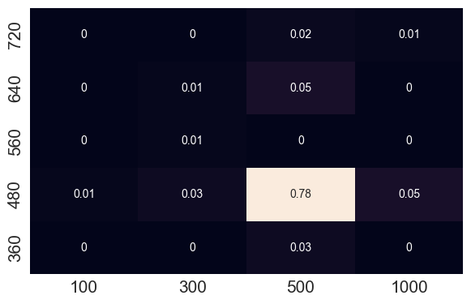
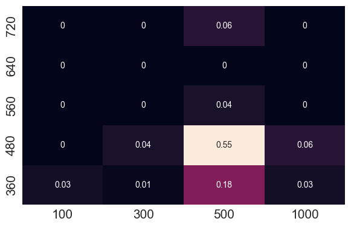

Chanakya: Learning Runtime Decisions for Adaptive Real-Time Perception
NeurIPS 2023
AbstractReal-time perception requires planned resource utilization. Computational planning in real-time perception is governed by two considerations - accuracy and latency. There exist run-time decisions (e.g. choice of input resolution) that induce tradeoffs affecting performance on a given hardware, arising from intrinsic (content, e.g. scene clutter) and extrinsic (system, e.g. resource contention) characteristics. Earlier runtime execution frameworks employed rule-based decision algorithms and operated with a fixed algorithm latency budget to balance these concerns, which is sub-optimal and inflexible. We propose Chanakya, a learned approximate execution framework that naturally derives from the streaming perception paradigm, to automatically learn decisions induced by these tradeoffs instead. Chanakya is trained via novel rewards balancing accuracy and latency implicitly, without approximating either objectives. Chanakya simultaneously considers intrinsic and extrinsic context, and predicts decisions in a flexible manner. Chanakya, designed with low overhead in mind, outperforms state-of-the-art static and dynamic execution policies on public datasets on both server GPUs and edge devices ProblemIn this work, we tackle the Streaming Perception problem. Motivation
Multiple optimal configurations exist that satisfy the real-time requirements (33ms) of a real-time perception system. By learning the optimal configuration depending on the environment, can we improve the streaming perception performance ?
Our Framework - ChanakyaResult: Performance improvement without additional model training
Insight: Configurations chosen are adaptive
Insight: Chanakya's Reward function doesn't assume anything about the hardware


Feature: Extrinsic contexts like process contention can easily be included
To cite our work, please use the following BibTex:Citation
@inproceedings{ghosh2023chanakya,
|